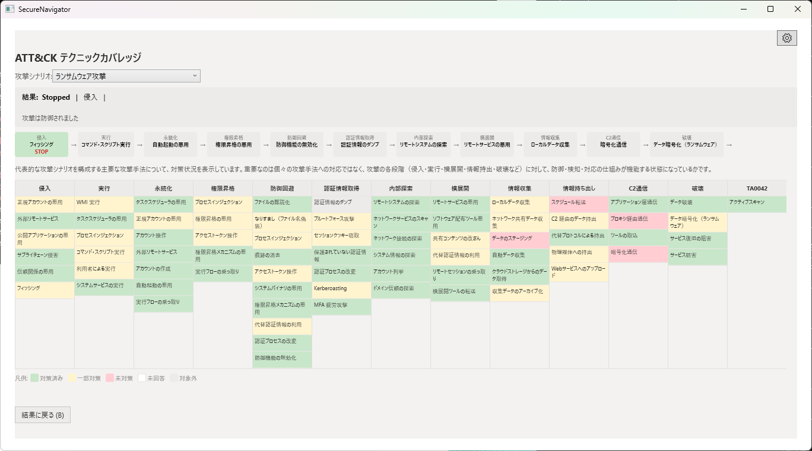
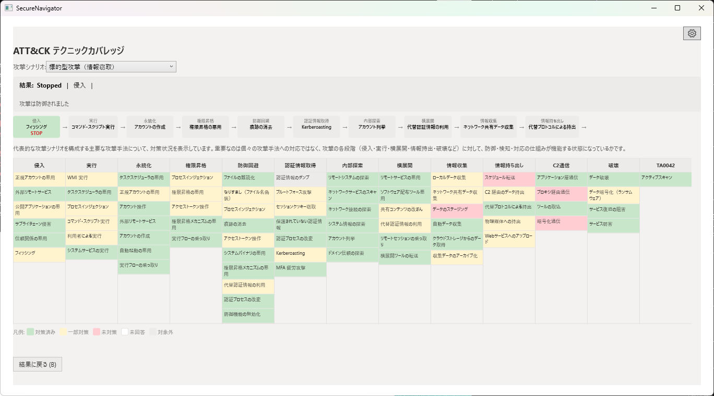
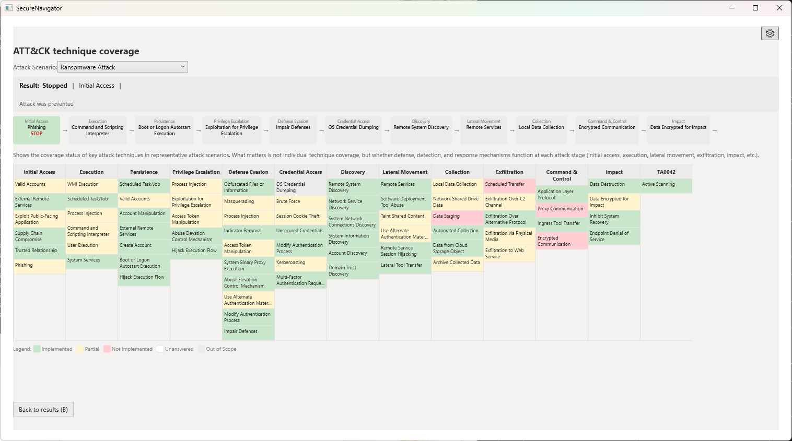
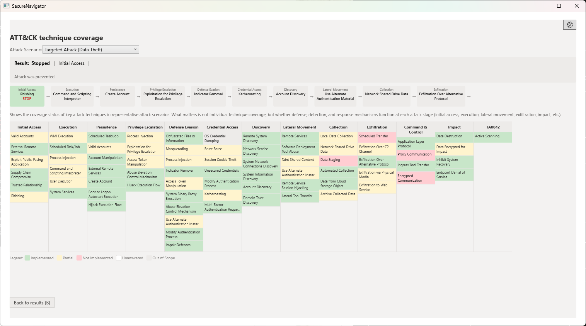

Chapter 5: 攻撃ビュー
攻撃の経路図、戦術チップ、状況別の群、用語の補足
攻撃ビュー画面の概要
攻撃ビュー画面（見出し「ATT&CK テクニックカバレッジ」）では、診断の回答から確認できた状況を、ATT&CK の「技術」（個々の手口）ごとに確認できます。結果画面の「ATT&CK を見る」で開き、「結果に戻る」で結果画面に戻ります。

画面の構成（上から）
- 見出し、シナリオ選択、経路図: 「攻撃シナリオ:」で確認したいシナリオを選びます。経路図は、攻撃が外部（左）から内部（右）へ進む流れを段階ごとのカードで示し、各カードにその段階での守りの状態（止められた・検知できる・突破される・未確認・未到達）が表示されます。流れが止まる地点には「ここで流れが止まる」と表示されます。
- 全体の状況: カバレッジ（網羅度）を表示します。「一部確認」は 0.5 件として換算されます。
- 不足の上位: 不足の技術のうち、攻撃の流れで先に出るものを表示します。残りは下の「不足」の群で確認できます。
- 戦術チップ（2 行）: 「戦術で絞り込み」です。「全体」または戦術を選ぶと、開いた群がその戦術の技術だけに絞られます。各チップには、その戦術の不足と一部確認の件数が表示されます。
- 状況別の群: 技術を状況ごとに分けて表示します。各群は開閉できます。「確認できた」の群は技術名だけを並べます。
- 用語欄: 「この画面に出る言葉」の欄で、戦術・技術・永続化・権限昇格・防御回避・C2・ハッシュ・DLL などの説明を確認できます（押すと開きます）。
状況別の群
| 群 | 内容 |
|---|---|
| 不足 | 備えが確認できなかった技術。 |
| 一部確認 | 備えの一部だけ確認できた技術。 |
| 確認できた | 備えが確認できた技術。 |
| 未回答 | 回答がない、または「わからない」の回答で判定できない技術。 |
| 対象外 | 診断の範囲外、または対応する質問が定義されていない技術。 |

ATT&CK テクニックの詳細 Pro
Pro 版では、各テクニックの詳細（セルの展開・詳細ペイン）を確認できます。Free 版でも、戦術ごとのカバレッジと状況別の群は確認できます。

ATT&CK テクニックの詳細は Pro 版のみの機能です。Free 版では、戦術ごとのカバレッジを確認できます。
Chapter 5: Attack View
Attack flow, tactic chips, status groups, glossary
Attack View Overview
The Attack View screen (titled "ATT&CK technique coverage") shows the status confirmed from your answers for each ATT&CK technique (an individual attacker method). Open it with "View ATT&CK" on the Results screen, and return with "Back to results".

Screen Layout (top to bottom)
- Heading, scenario selector, and attack flow: Choose a scenario with "Attack Scenario:". The flow shows an attack moving from outside (left) to inside (right) as cards, one per stage, and each card shows the state of the defenses at that stage (Stopped, Detectable, Breached, Unconfirmed, Not reached). "The flow stops here" marks where the flow stops.
- Overall status: Shows the coverage. "Partially confirmed" counts as 0.5.
- Top gaps: Shows the gap techniques that appear first in the attack flow. The rest are in the Gap group below.
- Tactic chips (2 rows): "Filter by tactic". Select "All" or a tactic to limit the open groups to that tactic's techniques. Each chip shows its Gap and Partial counts.
- Status groups: Techniques are split by status. Each group can be opened and closed. The Confirmed group lists names only.
- Terms: "Terms on this screen" explains tactic, technique, persistence, privilege escalation, defense evasion, C2, hash, DLL, and more (select to open).
Status Groups
| Group | Meaning |
|---|---|
| Gap | Techniques with no confirmed safeguard. |
| Partially confirmed | Techniques with only some safeguards confirmed. |
| Confirmed | Techniques with safeguards confirmed. |
| Unanswered | Techniques that cannot be judged because the answer is missing or "Don't know". |
| Out of scope | Techniques outside this assessment, or with no matching question defined. |

ATT&CK Technique Detail Pro
The Pro edition shows the details of each technique (expandable cells and a detail pane). The Free edition still shows the coverage for each tactic and the status groups.

ATT&CK technique detail is a Pro-only feature. The Free edition shows the coverage for each tactic.